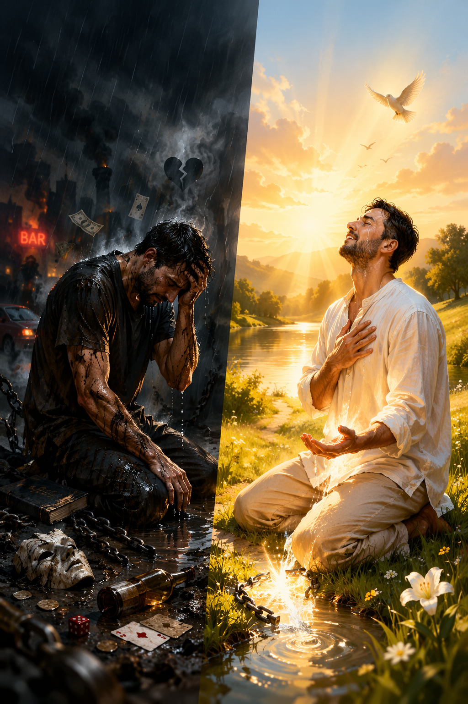

A fundamentação do seu passo de fé
O batismo começa antes de você entrar na água. Ele nasce no arrependimento. No grego bíblico, a palavra usada é Metanoia, que significa literalmente "mudança de mente".
Não é apenas sentir remorso, mas decidir mudar a direção da sua vida. Você estava caminhando para longe de Deus e, agora, decide caminhar em direção a Ele. É o abandono do pecado para o abraço da graça.
O batismo é um sermão visual. Quando você é mergulhado, você está proclamando ao mundo que a sua "velha natureza" morreu e foi sepultada com Jesus.
Submersão = Sepultamento | Emersão = Nova Vida
Ao sair da água, você simboliza a ressurreição. Assim como Cristo venceu a morte, você se levanta para uma nova vida. Você não é mais o mesmo; agora, sua identidade está ligada a Ele.
Muitos pensam no batismo como uma "opção" para cristãos extras, mas a Bíblia o apresenta como um ato de obediência direta ao Senhorio de Cristo.
Jesus não apenas ordenou, Ele deu o exemplo. Ao se batizar, você ultrapassa o limite da indecisão e entra no terreno da aliança pública com Deus. É o seu selo de compromisso com o Reino.
Quem pode ser batizado? Entenda o que a Bíblia exige para este passo.
O primeiro requisito não é ter um currículo religioso perfeito, mas sim a fé genuína. No encontro entre Filipe e o eunuco etíope, a pergunta foi clara: "O que impede que eu seja batizado?"
O batismo é um testemunho público. Não basta crer "no seu íntimo"; é necessário declarar que Jesus Cristo é o seu único Senhor e Salvador. É a exteriorização de uma realidade interna.
João Batista enfatizava: "Produzi, pois, frutos dignos de arrependimento". O batismo não apaga pecados de forma mágica; ele é a celebração de alguém que já decidiu abandonar as práticas que desagradam a Deus.
Se você reconhece sua necessidade de Cristo e decidiu segui-lo, você está pronto. O batismo não é para os "perfeitos", mas para os "redimidos" que desejam ultrapassar os limites da velha vida.
CONCLUÍDO - VOLTAR AO MENU